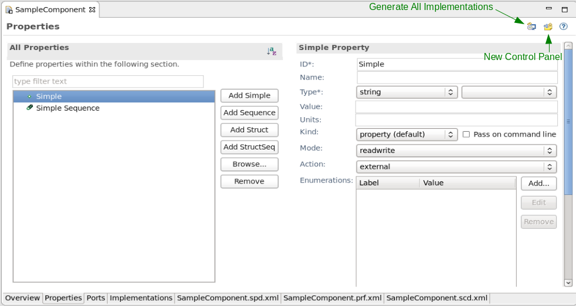
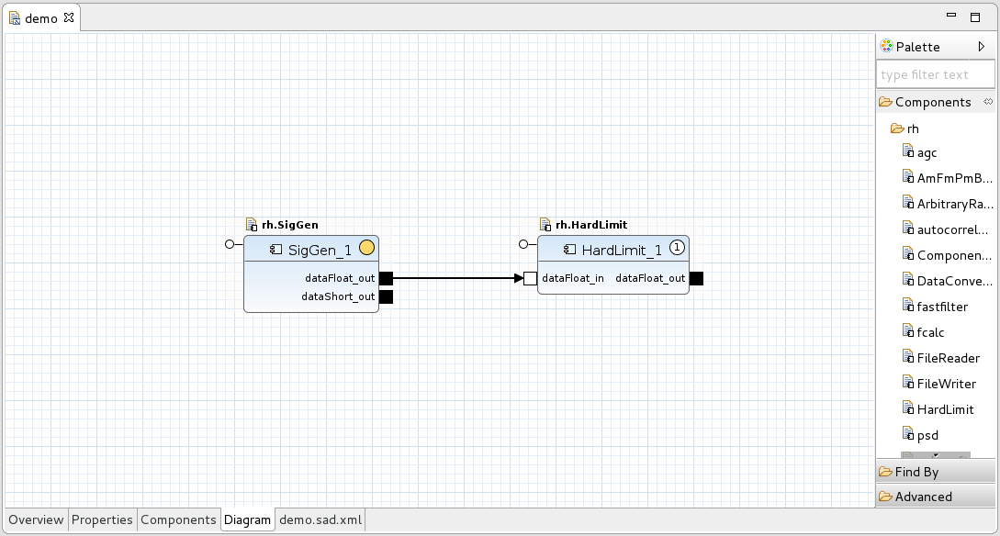
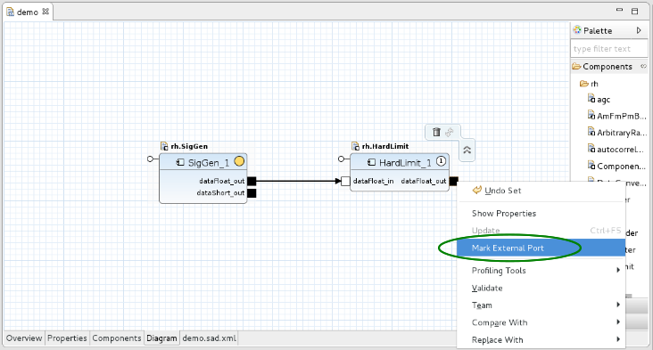
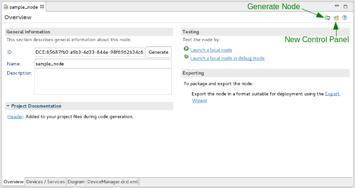
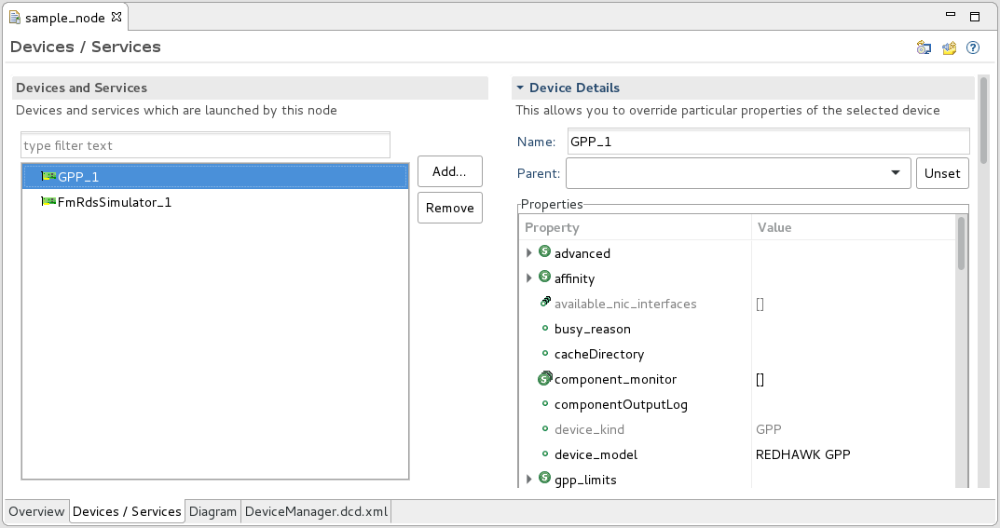

Chapter 19
Using the REDHAWK IDE
The REDHAWK IDE is a tool that enables developers to create, test, and deploy software for REDHAWK systems. This tool is built on Eclipse, which is a generic, extensible IDE that allows developers to add custom modules. The REDHAWK IDE, therefore, leverages all of the features available in a bare-bones Eclipse IDE while also providing customized features specific to REDHAWK development.
The following features are included in REDHAWK Version 1.10:
- Eclipse - Base Eclipse package: http://eclipse.org/
- Eclipse JDT - Java Development Tooling for Eclipse: http://www.eclipse.org/jdt/
- Eclipse CDT - C++ Development Tooling for Eclipse. Includes tools for autoconf, rpm spec file editing, and many debugging tools: https://www.eclipse.org/cdt/
- Eclipse CORBA - IDL Editor for Eclipse: http://eclipsecorba.sourceforge.net/
- PyDev - Python Development Tooling for Eclipse: http://pydev.org/
- Subversion - SVN Tooling for Eclipse: https://www.eclipse.org/subversive/
- Eclipse Git - Git Tooling for Eclipse: https://www.eclipse.org/egit/
For signal processing developers, the REDHAWK IDE provides graphical interfaces for the auto-generation of Component, Device, and Service code in C++, Python, and Java. Built on top of the Eclipse Java Developer Tools (JDT), Eclipse PyDev, and Eclipse C/C++ Developer Tools (CDT), the IDE provides feature-rich editors for code written in any of the three languages. In addition, a drag-and-drop environment for testing these modules and constructing them into Waveforms and Nodes is available.
For system developers, the IDE provides an environment for deploying and maintaining Applications onto fielded systems. Furthermore, the pluggable nature of Eclipse allows system developers to add customized system user-interface modules.
19.1 Launching the REDHAWK IDE for the First Time
This section describes the basic process for starting the REDHAWK IDE for the first time.
Before starting the REDHAWK IDE for the first time, the REDHAWK Core Framework and the IDE must be installed (Section 2.4).
- Assuming the IDE is installed in ~/redhawk-ide/, start the IDE by entering the
following commands:
At startup, the program may prompt for a Workspace location. In Eclipse and the REDHAWK IDE, a Workspace is a logical collection of projects under active development.
- If prompted for a Workspace location, set the workspace to where you intend to store source
code.
If you upgraded from 1.8.x or 1.9.x, it is recommended that you set the workspace in 1.10 to a different workspace than the workspace used in those previous versions of REDHAWK. If you set the workspace to the same workspace that you used in 1.8.x or 1.9.x, you must delete the Domain from SCA Explorer before launching the Domain from Target SDR.
19.1.1 PyDev Overview
PyDev is an external product that comes bundled with the REDHAWK IDE and provides a Python IDE for Eclipse, which may be used in Python, Jython, and IronPython development.
PyDev’s many features include:
- Code completion
- Code completion with auto import
- Type hinting
- Code analysis
- Go to definition
- Refactoring
- Debugger
- Interactive console
- Unittest integration
PyDev has its own set of documentation and getting started details. First time users are strongly advised to read the Getting Started Guide, which explains how to properly configure PyDev. The PyDev documentation can be found in the following locations:
- PyDev Getting Started, http://pydev.org/manual_101_root.html
- PyDev Configuring Interpreter, http://pydev.org/manual_101_interpreter.html
- PyDev Manual, http://pydev.org/manual.html
PyDev’s default configuration causes some files within REDHAWK to appear as if they are invalid. To address these problems, refer to Section 19.2.
19.2 Configuring PyDev for REDHAWK Development
Every time a new workspace is used, PyDev is automatically configured. If you want to manually configure PyDev, use the following procedure:
- Start the REDHAWK IDE by entering the following:
- Select Window > Preferences.
- Select PyDev > Interpreter - Python.
- Select Auto Config.
- Click OK.
If OSSIEHOME is not within the default system location of /usr, it may be unchecked by default. Ensure that OSSIEHOME/lib/python and OSSIEHOME/lib64/python directories are checked.
- Select Forced Builtins.
- Select New…
- Enter the following information into the dialog box. Remove any new lines.
- Click OK.
19.2.1 PyDev: Undefined variable or imports
Most of these types of errors can be fixed by ensuring that the Forced Built-ins has been added correctly as shown in Section 19.2.
The user can also force PyDev to ignore these types of errors by entering the following into the Python source file on the line with the error:
19.3 The Workbench
The Eclipse introductory screen displays a Workbench button that takes the user to the IDE’s development environment: the Workbench. The Workbench is made up of multiple, smaller windows, which are referred to as Views in the Eclipse context.
At the center of the IDE Workbench is the Editor window, which is empty at initial startup. The Editor is the primary window used when developing code within the REDHAWK IDE. An Eclipse Editor is a context-sensitive window within the Workbench; the language of opened files dictates the type of editor that is opened, impacting editing features such as syntax highlighting.
For a more detailed understanding of the Eclipse environment and nomenclature, consult the online Eclipse documentation at http://help.eclipse.org/ or the embedded documentation within the REDHAWK IDE by selecting Help > Search.
19.3.1 Perspectives
The Views that makeup the Workbench, along with the particular layout of those Views, are referred to as a Perspective. By changing Perspectives throughout the development process, a developer may optimize his/her work environment based on the requirements of the particular task at hand. The default Perspective in the REDHAWK IDE is the SCA Perspective, which is discussed in the following section. A user may switch from the SCA Perspective to any other Perspective whenever needed.
There are two primary methods for changing Perspectives:
- Click Open Perspective from the top right of the Workbench.
- Select Window> Open Perspective > Other.

A view may be resized, moved, and closed within a given Perspective to allow for personal customization.
To reset the current Perspective to its default state:
- Click Window > Reset Perspective…
19.3.2 The SCA Perspective
The SCA Perspective is comprised of seven Views and the Editor window. Five of these views are provided by Eclipse IDE, while the remaining two views are REDHAWK-specific.
The following five Eclipse-provided Views are in the SCA Perspective:
- Project Explorer View: Provides a hierarchical view of the resources in the Workbench.
- Outline View: Displays an outline of a structured file that is currently open in the editor area.
- Properties View: Displays Property names and basic Properties of a selected resource.
- Problems View: Automatically logs problems, errors, or warnings when working with various resources in the Workbench.
- Console View: Displays a variety of console types depending on the type of development and the current set of user settings. Specific implementations of the Console View are described in Section 19.4.11.
The following two REDHAWK-specific Views are in the SCA Perspective:
- SCA Explorer View: Allows a user to navigate the contents of an SCA Domain. It
provides capabilities for viewing the contents of the Domain, configuring instantiated
resources, and launching Applications in a target SDR environment. It also provides
access to the Sandbox, which is an environment for running Components and
Applications without a Domain Manager or a Device Manager. Exploring an active
Domain using the REDHAWK IDE is discussed in Chapter 22. The SCA Explorer
View is displayed in Figure 19.2.

Figure 19.2: The SCA Explorer View
- CORBA Name Browser View: Maps names to specific CORBA Servants. The CORBA
Name Browser View is used to examine the current contents of the Naming Service as
well as perform basic manipulation of that context. The view displays all currently bound
name contexts (folders) and objects. The CORBA Name Browser View is displayed in
Figure 19.3.

Figure 19.3: The CORBA Name Browser View
19.3.3 Programming Language Specific Perspectives
While the SCA Perspective combines views that are commonly used while viewing Domain objects, creating SCA resources, and launching Applications, many other Perspectives are available that are optimized for code development. Because the REDHAWK IDE is built on top of the Eclipse platform, it takes advantage of standard Eclipse, as well as third party, IDE Perspectives for the purpose of supporting language-specific development. Specifically, the IDE contains Perspectives that support C/C++, Java, and Python development.
For example, the Java Perspective combines views that are commonly used while editing Java source files, while the Debug Perspective contains the views that are used while debugging Java programs.
For more information on Perspectives, particularly the Eclipse default and the programming language-specific Perspectives packaged with the REDHAWK IDE, refer to http://help.eclipse.org/.
19.4 Editors and Views
This section discusses the most commonly used Editors and Views provided with the REDHAWK IDE.
19.4.1 SoftPkg Editor
|
|

To open the SoftPkg Editor, double-click an SPD file from the Project Explorer View. It presents all the content that can be found within the spd.xml file in an editing environment designed for ease of use. If the SPD file references a PRF or SCD file, additional tabs are made available that represent these files in similar fashion.
Each of the Editor tabs, with the exception of the raw XML tabs, have the following buttons located in the top right corner:
- Generate All Implementations Button: This button is used to generate the code
implementation of the SPD file. The generated code is based on the code generator
template that was chosen during the New Project Wizard and the content found
within the SPD, PRF, and SCD files.
The code generators are not exhaustive. There are edge case Port types that may not compile.
- New Control Panel Button: This button is used to generate a new control panel as discussed in Section 24.2.
Each of the three XML files has a corresponding Editor tab:
- The *.spd.xml file can be edited from the Overview tab
- The *.prf.xml file can be edited from the Properties tab
- The *.scd.xml file can be edited from the Implementations tab.
The following sections describe each of these Editors.
19.4.1.1 SoftPkg Editor Overview Tab
The Overview tab, as seen in Figure 19.4, is a representation of the content found within the SPD file and contains six sections:
- The General Information section provides the ability to view and set (if write permissions are granted) the resource’s ID and Name as well as the location of the PRF and SCD files. The initial content of these fields is auto-generated when the project is created and is generally left unaltered. The optional fields, Version, Title, and Description, may be set to aid in the project’s documentation.
- The Ports section provides the ability to add, edit, and view Port information.
Information about Ports is described in Section 3.3.3.
Use the following procedure to define a new Port:
- Click Add….
- Type a Port name unique to this resource.
- Select a Direction: either input, output, or bidirectional.
- Select a Type. A Port must have a type and defaults to control if one is not selected.
- Select an IDL for this Port to inherit from. The set of IDLs within the BulkIO package is recommended for Ports that input or output intrinsic data types. The IDL list is taken from the IDLs found within the Core Framework’s install location.
- Click Finish.
An existing Port may be edited or removed by selecting the Port and clicking Edit or Remove respectively.
- The Interfaces section lists the IDLs that this resource inherits. This includes IDLs used by the resource’s Ports, lifecycle, and Properties. This table is read only, and additional IDL interfaces cannot be added here.
- The Component Content section displays hyperlinks to navigate to the Properties and Implementations tabs of the SoftPkg Editor.
- The Testing section displays two hyperlinks. Launch a local component launches a local instantiation of this resource within the Sandbox. Launch a local component in debug mode provides additional runtime control, including the ability to place breakpoints, pause execution, and inspect and modify variables. For information on how to use these hyperlinks refer to Section 19.6.
- The Exporting section provides a hyperlink for deploying a project to the SDR
Root.
Use the following procedure to export a project using the Export Wizard:
- Click Export Wizard.
- Select the projects to export.
- Type or browse to the export location.
- Click Finish.
19.4.1.2 SoftPkg Editor Properties Tab
|

|
The Properties tab is a representation of the content found within the PRF file. The REDHAWK IDE supports the creation of four types of Properties: simple, simple sequence, struct, and struct sequence. Refer to Section 3.3.4 for information about the different Property types.
Use the following procedure to define a new simple Property:
- In the All Properties Section, select Add Simple.
The Editor page is now in an error state because the required fields are not defined. Required fields are indicated by an asterisk.
- In the Simple Property Section, type an ID in the ID field.
- In the Simple Property Section, select a Type.
- Save (Ctrl+S) to write the changes to disk.
Use the following procedure to define a new simple sequence Property:
- In the All Properties Section, select Add Sequence.
The Editor page is now in an error state because the required fields are not defined. Required fields are indicated by an asterisk.
- In the Simple Sequence Property Section, type an ID in the ID field.
- In the Simple Sequence Property Section, select a Type. All simple Properties within the sequence Property must be of the same type.
- In the Simple Sequence Property Section, click Add… to insert a new entry into the sequence.
- Save (Ctrl+S) to write the changes to disk.
Use the following procedure to define a new struct Property:
- In the All Properties Section, select Add Struct.
The Editor page is now in an error state because the required fields are not defined. Required fields are indicated by an asterisk.
- In the Struct Property Section, type an ID in the ID field.
- In the All Properties Section, expand the struct and select Simple.
- In the Simple Property Section, define the Simple Property.
- In the All Properties Section, right-click the struct and select New > Simple to add additional simple Properties to the struct.
- Save (Ctrl+S) to write the changes to disk.
Use the following procedure to define a new struct sequence Property:
- In the All Properties Section, select Add StructSeq.
The Editor page is now in an error state because the required fields are not defined. Required fields are indicated by an asterisk.
- In the Struct Sequence Property Section, type an ID for the struct sequence in the ID field, .
- In the All Properties Section, expand the struct sequence, select Struct.
- In the Struct Property Section, type an ID for the struct in the ID field, .
- This struct Property may be modified as if it were a stand alone struct Property.
Use the following procedure to create the sequence of structs:
- In the All Properties Section, select the struct sequence.
- In the Struct Sequence Property Section, click Add….
- The struct within the Struct Value table may be expanded to modify the initial values of the struct sequence.
- Save (Ctrl+S) to write the changes to disk.
In addition to creating a new property from scratch, a user may also copy an existing Property from a deployed resource.
Use the following procedure to copy a Property from a deployed resource:
- In the All Properties Section, click Browse….
- Expand Target SDR.
- Drill down to and select the desired Property.
- Click Finish.
- Save (Ctrl+S) to write the changes to disk.
19.4.1.3 SoftPkg Editor Implementations Tab
|
|

The Implementations Tab is a representation of the content found within the SCD file. It describes the programming language implementations that are generated and the hardware dependencies required for this resource.
During the New Project Wizard, the initial programming language and code generation template were selected. In the All Implementations section there is the option to add additional programming language implementations.
The right portion of the editor is context sensitive, and displays the information pertaining to the selected implementation.
- The Implementation section defines the compiler for the selected language and provides a custom description for this implementation.
- The Dependencies section provides the opportunity to place limitations on a resource so that it may only execute on a suitable Device. This is done through the use of Property dependencies. A resource’s execution may be limited to a particular Device by placing a dependency on a device’s Property. To provide compatibility among different sets of users, well known Properties have been created, including different OS and processor types. The OS and processor dependencies sections contain a preset list of Properties to select from.
- The Code section indicates the local file name, priority, and executable for the implementation.
- The Code Generation Details section contains configuration values for the implementation’s code generation. This includes the code template used, output folder location and code generator properties.
19.4.2 Waveform Editor
|

|
To open the Waveform Editor, double-click a SAD file from the Project Explorer View. It presents all the content that can be found within the sad.xml file in an editing environment designed for ease of use. The Waveform Editor contains an Overview, Properties, Diagram, and a raw XML tab, which contains the SAD file content.
19.4.2.1 Waveform Editor Overview Tab

The Overview tab provides general information about the Waveform, and hyperlinks to additional Waveform-related sections within the IDE.
- The General Information section provides controls to set the ID, Name, Version, Controller and Description for the Waveform.
- The External Ports section provides the ability to designate a particular Component’s
Port as accessible to external Waveform objects. By default, an external Port name is
equal to the name of that Port within the Component, but the external Port can be
renamed. For more information about external Ports, refer to Section 11.4.5.
To change the external Port name:
- In the External Ports section, locate the Port and click the cell in the External Name column in the Port’s row.
- Enter a new value for the name. (Figure 19.9)

Figure 19.9: Renaming External Ports
- Press Enter.
- The Testing section allows for the launching of local Waveforms. A local Waveform does not require a running Domain or Device Manager and executes within the Sandbox. A local Waveform is similar to launching an individual Component in the Chalkboard and constructs the Waveform within a new Chalkboard instance. You may launch additional Components into the Waveform running in the Chalkboard using the palette. These newly launched Components have standard runtime actions (Plot, Start, Stop, Terminate, and Connect) available. When the local running Waveform is released these newly launched Components are not saved in the Waveform.
- The Exporting section provides a hyperlink to the Export Wizard, which steps through the process of deploying the Waveform into the SDR Root.
19.4.2.2 Waveform Editor Properties Tab
|
|

The Properties tab provides access to the Component’s properties within the Waveform. Within the Properties tab, you can:
- Assign an external property ID
- Set the overridden value within the SAD file
- Filter and search for properties
- Compare the overridden value to the original PRF value
- Export the currently displayed table to an html spreadsheet
The Properties of the Component designated as the Assembly Controller are always accessible externally and are greyed out in the Properties tab (Figure 19.11). Additional Properties may be assigned an external ID, which allows for a particular Component’s Property to be designated as accessible to external Waveform objects. For more information about external Properties, refer to Section 11.4.6.
To make a Property external:
- Select the Properties tab of the Application’s SAD file.
- Edit the External ID field by entering the desired ID.
The external IDs must be unique. If a duplicate external ID is entered that conflicts with the Assembly Controller defaults, the following error message is displayed: External property ID duplicates Assembly Controller property ID External ID. If a duplicate external ID is entered that conflicts with that of a regular Component, a generic error message is displayed. To view the error details, hover over the error message.
|
|

19.4.2.3 Waveform Editor Diagram Tab
|
|
You can use the Diagram tab (along with the Properties View) to place Components into the Waveform, connect Components together, set Waveform-specific Properties for Components, and make a Port external. For more information about external Ports, refer to Section 11.4.5.
To add a Component to the Waveform and configure its Properties:
- Drag the Component from the palette onto the diagram.
- Right-click the Component, select Show Properties View.
- From the Properties View, change the desired Properties.
- Save the Editor to write the changes to disk.
To make a Port external:
- Right-click the Port you want to make external.
- Select Mark as External Port.

Figure 19.13: Mark External Ports
From the Diagram tab, a user may also use the Find By feature. The Find By feature allows a user to find an existing resource based on the resource’s name. This resource may be accessed through either the NameService or the Domain.
To find a resource using the Find By feature:
- Select the FindBy tool.
- Click-and-drag within the diagram to create a FindBy box.
- Select either the Naming Service or Domain Finder tool, and click within the FindBy box.
- Enter the desired resource’s name into the Naming Service block, or enter the name and type into the Domain Finder block.
Ports may be added to the FindBy blocks to allow them to connect to existing resources.
To add a Port to a FindBy block:
- Select the Port type to add from the Base Types section of the palette.
- To add the Port, click within the FindBy block.
Connections may be made from input to output Ports by clicking and dragging from one Port to the other. Ports may have more than one connection drawn to, or from, them. Any unsupported or erroneous connection that the IDE can detect is marked with an appropriate indicator. Hovering over the indicator provides information concerning the error.
The sad.xml tab displays the raw XML data, which describes this Waveform fully. Although not recommended, manually editing the XML file is supported.
19.4.3 Node Editor
|
|

To open the Node Editor, double-click a DCD file from the Project Explorer View. It presents all the content that can be found within the dcd.xml file in an editing environment designed for ease of use. The Node Editor contains an Overview, Devices, Diagram, and a raw XML tab, which contains the DCD file content.
19.4.3.1 Node Editor Overview Tab
|

|
The Overview tab provides general information about the Node, and hyperlinks to additional Node-related sections within the IDE. From the General Information section, the ID, name, and description of the Node may be set. The Node Content section provides a hyperlink to the Devices tab, which allows the user to specify what Devices are within this Node. The Testing section is currently under development and is presently not supported. Lastly, the Exporting section provides a hyperlink to the Export Wizard, which steps through the process of deploying the Node into the SDR root.
19.4.3.2 Node Editor Devices Tab
|

|
The Devices tab enables a user to add Devices from the SDR Root into the Node and to configure the Properties for the Devices . When a Property is set or changed here, it is specific to this Node and does not impact other Nodes or instances of this Device.
The following steps explain how to add a device to the Node:
- Click Add….
- Select the Device to add.
- Click Finish.
Use the table in the Device section to configure the Nodes Properties.
19.4.3.3 Node Editor Diagram Tab
|
|
The Diagram section (along with the Properties View) provides the same features as the Devices tab.
The following steps explain how to add a Device to the Node and configure its Properties:
- Drag the Device from the palette onto the diagram.
- Right-click the Device, and select Show Properties View.
- From the Properties View, change the desired Properties.
- Save the Editor to write the changes to disk.
Like the Devices tab, any Property modified from the Device section is specific to this Node and does not impact the Device’s execution in other environments.
From the Diagram tab, a user may also use the Find By feature. The Find By feature allows a user to find an existing resource based on the resource’s name. This resource may be accessed through either the NameService or the Domain.
Use the following procedure to find a resource using the Find By feature:
- Select the FindBy tool.
- Click-and-drag within the diagram to create a FindBy box.
- Select either the Naming Service or Domain Finder tool, and click within the FindBy box.
- Type the desired resource’s name into the Naming Service block or the name and type into the Domain Finder block.
Ports may be added to the FindBy blocks to allow them to connect to existing resources.
The following steps explain how to add a Port to a FindBy block:
- Select the Port type to add from the Base Types section of the palette.
- To add the Port, click within the FindBy block.
Connections may be made from input to output Ports by clicking and dragging from one Port to the other. Ports may have more than one connection drawn to or from them. Any unsupported or erroneous connection detected by the IDE is marked with an appropriate indicator. Hovering over the indicator provides information concerning the error.
The dcd.xml tab displays the raw XML data, which describes the Node fully. Although not recommended, manually editing the XML file is supported.
19.4.4 NeXtMidas Plot Editor

Any blue files can be opened with the NeXtMidas Plot Editor. Any files in the workspace with the extensions .prm or .tmp are automatically opened in the NeXtMidas Plot Editor.
The NeXtMidas Framework has an in plot menu system and mouse zoom functionality that may be used within the plot window. The full use and features of the plotting menus are beyond the scope of this guide and are explained within the official NeXtMidas documentation.
Interact with the plot in the following ways:
- Zoom In: Left-click and drag to form a box to zoom in on a portion of the plot.
- Zoom Out: Right-click to zoom out a single level.
- Open Menu: Center-click to bring up the NeXtMidas plot menu.
- Close Menu: Right-click an open menu to close the pop-up menu.
19.4.5 SCA Explorer View
|
|
The SCA Explorer View, shown in Figure 19.19, enables users to navigate the contents of an SCA Domain. It provides capabilities for viewing the contents of the Domain, configuring instantiated resources, and launching Applications in a target SDR. It also provides access to the IDE Sandbox, which is an environment for running Components and Applications without launching a Domain Manager or Device Manager.
Exploring an active Domain using the REDHAWK IDE is discussed in Chapter 22. Using the IDE Sandbox is discussed in Section 3.6.2.
19.4.6 REDHAWK Plot View

When a user plots a Port, the REDHAWK Plot view displays a NeXtMidas Plot.
The NeXtMidas Framework has an in plot menu system and mouse zoom functionality that may be used within the plot window. The following commands are part of the built-in NeXtMidas functionality:
- Zoom In: Left-click and drag to form a box to zoom in on a portion of the plot.
- Zoom Out: Right-click to zoom out a single level.
- Open Menu: Center-click to bring up the NeXtMidas plot menu.
- Close Menu: Right-click an open NeXtMidas plot menu to close the pop-up menu.
The full use and features of the plotting menus are beyond the scope of this guide and are explained within the official NeXtMidas documentation.
The REDHAWK IDE contains the following controls for interacting with the active plot:
- Change Plot Mode: Changes the mode of the current plot. The plot options include:
- Auto
- Imaginary
- Magnitude
- Phase
- Real
- Real and Imaginary
- Real vs Imaginary
- 10 Log
- 20 Log
- Change FFT Size: Changes the FFT size. The options include:
- 1k
- 2k
- 4k
- 8k
- 16k
- 32k
- 64k
- Change Plot Type: Changes the plot type. The types include:
- Dot
- Line
- Point
- Raster
The red icon next to the Change Plot type arrow is a toggle button that when clicked, changes the active plot to display either the Line or the Raster plot.
- The View Menu (Figure 19.21) contains the following options:
- New Plot View: Displays an identical plot view. This option is useful to view both the Line and Raster plots of the same data simultaneously.
- Plot Type: Changes the plot type. Plot types include: Dot, Line, Point and Raster.
- Display SRI: Displays the SRI View (Section 19.4.10).
- Settings...: Displays the Plot Settings dialog (Figure 19.22), which enables the
user to adjust certain plot settings. If the field is NOT adjustable, it is grayed
out.
- The Plot section enables you to change the plot mode, enable the plot configure menu using the mouse, and enable quick access control widgets.
- The BULKIO section enables you to turn on blocking and remove the plot when an EOS is received.
- The FFT section enables you to set the Number of averages, the overlap, the sliding number averages, the transform size, and the window type of the FFT.


19.4.7 Event Viewer View
The Event Viewer View is used to listen to any Event Channel (the IDM and ODM Channels are present by default). It also provides a means of filtering, sorting, and exporting the event traffic collected.
To listen to a channel from the SCA Explorer View:
- Expand the Domain.
- Expand the Event Channels folder.
- Right-click the desired channel, and select Listen to Event Channel.
The Event Viewer View for the selected channel is displayed (Figure 19.23) and new events are added to the table.
To listen to a channel from the CORBA Name Browser View:
- Expand the Naming Service.
- Expand the Domain.
- Right-click the desired channel, and select Listen to Event Channel.
The Event Viewer View for the selected channel is displayed (Figure 19.23), and new events are added to the table.
|
|

The controls in the upper right of the Event Viewer View provide the following functionality:
- To clear the logs, click the Clear icon.
- To ensure the view doesn’t scroll automatically to the top as new events are received, click the Scroll Lock icon.
- To customize the Table:
- Click the Customize Table icon.
- Enter the desired changes in the Customize Table Dialog.
- Click OK.
- To stop listening to a channel:
- From the View Menu, select Remove….
- In the Dialog, select the channel listeners to remove.
- Click OK.
The controls at the bottom of the Event Viewer View enable the user to filter and search the event log.
To filter the event log:
- In the Filter field, enter the filter text for the event log.
- To remove the filter, click the Clear icon.
- To enable regular expressions in the Filter field, check the RE checkbox.
To search the event log:
- In the Search field, enter the text for which you want to search.
- To clear the search highlights from the event log, click the Clear icon.
- To enable regular expressions in the Search field, check the RE checkbox.
19.4.8 Data List and Statistics View
The Data List and Statistics features are designed for simple runtime debugging of Component Ports.
- To open the Data List view, right-click a Port of a started Component.

Figure 19.24: Port Context Menu
- From the context menu, select Data List.
The Data List View is opened. (Figure 19.25)
- Select the preferred capture type:
- Number of Samples: Select a sample size
- Indefinitely: Collect until the user stops the process.
- Select the Number of Dimensions of the sample data:
- Real
- Complex
- any positive integer number of dimensions
- Click Start Acquire.
After all desired samples have been acquired and displayed in the Data List table, two additional options are displayed:
- Save
- Chart
- To open a wizard and write the data to a BLUE Midas file or a binary file, click Save.
- To open the Statistics View, which features a histogram and basic statistics of the sample
data, click Chart. (Figure 19.26)
- There are two ways to change the dimensions displayed in the Statistics View:
- In the Data List view, click the column headers.
- In the Statistics view, click View Menu and select Settings. This opens the
Chart Options dialog. In the Chart Options dialog, change the categories
displayed in the chart. (Figure 19.27)
The chart and basic statistics refresh with each new collection of data in the Data List view.


19.4.9 Port Monitor View
The Port Monitor View enables you to monitor the amount of data flowing out of or in to a particular Port. These link statistics are helpful when debugging and can help identify which Component is slowing down or dropping information during data processing.
To open the Port Monitor View, right-click the Port of a started Component and select Monitor Ports from the context menu (Figure 19.28).
|
|

The Port Monitor View is opened. (Figure 19.29)

The View displays the following information:
- Name: The name of the Port or Port connection.
- Elements/sec: The rate of CORBA elements transferred in the pushPacket data call.
- MBps: Mega Bytes transferred per second.
- calls/sec: Number of push calls per second to the Port.
- Stream IDs: List of all active stream IDs.
- Avg. Queue Depth: For Components that queue data before processing/sending, the average queue depth measured as a percentage. If a Port does not queue data, this value is set to zero.
- Time: The elapsed time, in seconds, since the last packet was transferred via a push packet call.
The following actions are available in the Port Monitor View.
- To Configure the Port Monitor View:
- Click the View Menu.
- Select Configure.
The Port Monitor Configuration dialog box is displayed.

Figure 19.30: The Port Monitor Configuration Dialog Box
The following options can be configured:
- Refresh Interval (sec): The time interval between fetching the Port statistics.
- Column Configuration: Specifies which columns are visible.
- To force a refresh of any connection or Port:
- Right-click the item.
- Select Refresh.
- To stop monitoring:
- Right-click the item.
- Select Stop Monitoring.
19.4.10 SRI View
The SRI View enables the user to view the SRI data from a particular Port. For more information on SRI data, refer to Section 15.2.3. The following procedure explains how to open the SRI View.
- To open the SRI View, right-click the Port of a started Component and select Display
SRI from the context menu (Figure 19.31).
The SRI View is opened (Figure 19.32).

Figure 19.32: The SRI View
- The following options are available in the SRI View.
- To clear the display of specific SRI data once an EOS has been received, click Clear Selected SRI.
- To clear the display of all SRI data once the respective EOSs have been received, click Clear All SRIs.
- To pause the SRI data, click Pause Incoming SRI Data.
- To receive notification when new SRI data is displayed, click Notify on receiving new Push SRI.
- To change the active SRI data stream between different active Components, click Change Active Stream.
- To generate both an .xml and a .sri file for each stream being monitored, click Save SRI Data to file.

19.4.11 Console View
The Console View is a part of Eclipse and the basic use is well documented by the Eclipse documentation: http://help.eclipse.org/. The REDHAWK IDE uses multiple Console Views for different purposes. Third party plug-ins within REDHAWK have their own Console Views.
The Console Views found in the REDHAWK IDE are:
- Domain & Device Manager: When a Domain or Device Manager is launched, a new Console View is created. These new consoles contain an instance of a running nodeBooter. By default, log messages, standard out, and standard error messages for Components and Devices are written to the Device Manager console. Domain Manager related messages, including Waveform creation and resource allocation are written to the Domain Manager’s console.
- C++ builds: Compiling a C++ Device or Component creates a C-build console, which runs the Component/Device build script. While Eclipse does a relatively good job of parsing build output and providing in-context error indicators, it is sometimes helpful to view the output of the build from the console.
- Code Generators: When automatically generating code for a Component or Device, the appropriate code generator console is displayed and contains information pertaining to the code generation.
- Python Sandbox The Python Sandbox, as described in Chapter 9, is a powerful tool for testing and interacting with Components and Devices. A Python Sandbox may be created from within the IDE to aid in testing.
- Third Party Consoles: Additional consoles (not described in this section) are available, including PyDev Scripting, Subversion (SVN), Concurrent Versions System (CVS), Java Stack Trace, etc. These are part of Eclipse or part of third party plug-ins such as PyDev.
19.4.12 Properties View
The Properties View, shown in Figure 19.33, displays and enables users to edit SCA Properties of selected SCA resources. The Properties View keys off of the SCA Resource object type and is displayed regardless of where the SCA Resource was selected. Therefore, the Properties View can be used when selecting SCA Resources from either the SCA Explorer, Sandbox, Waveform Diagram, Node Diagram, or any other Editor or View that displays an SCA Resource.
|
|

19.5 Types of REDHAWK Projects
This section describes the different types of REDHAWK Projects and how to create them using the provided Wizards. Before creating a new project, it is recommended that the IDE be in the SCA Perspective so that the proper menus are available. For guidance on how to switch to the SCA Perspective refer to Section 19.3.1.
There are three ways to create a new REDHAWK project:
- Click File > New followed by the project type.
- Click File > New > Project then select the project type.
- Right-click within empty space of the Project Explorer and select New > Project
Using any method, the IDE prompts the user with multiple project types to select from. Each project type has a custom Wizard which guides the user through the initial creation process.
Some of the more basic fields within the new project Wizard are common to all project types and include:
- Project Name: A project name that is unique to the current workspace. Project
names may not begin with a number and may not contain special characters.
The Wizard dialog detects errors and informs the user if there is an invalid entry.
- Location: By default the location of the project is set to the current workspace. This may be changed by deselecting the Use default location check box and providing a custom location.
- Working sets: A working set is an Eclipse concept and provides an additional layer of organization to the project workspace. A user may put common projects into a single “working set” to visually organize the Project Explorer. Additional options become available when projects are placed in working sets allowing the user to build, refresh, and search based on a specific working set. While it may resemble a folder, a working set does not create a new directory on the file system and the same project may belong to multiple working sets.
19.5.1 New SCA Component Wizard
The New Component Project Wizard is a three page wizard that walks the user through project creation, programming language, and code generator selection. Many of the fields found within the Component project wizard are also found within the Device project wizard. Fields common to all new project wizards are defined in Section 19.5.
Page one of the Component wizard contains:
- Contents: An SCA Component is defined by an SPD file. By default, when creating a new Component, the SPD file created is an empty skeleton. A new Component may be based off of a previous Component’s SPD file by selecting it from the file system.
- Component ID: Every softpkg element contains an ID which is used for universally unique identification. The IDE generates a Distributed Computing Environment (DCE) compliant UUID by default.
Page two of the wizard defines the Component’s implementation, the programming language used and the code generation template.
The content found on this page includes:
- Prog. Lang: A Component’s implementation may be written in either C++, Java, or Python.
- Code Generator: The REDHAWK IDE provides a single code generator for each of the programming languages. It is possible to augment the IDE with additional code generators. This process is described in Section B.1.1. A user may choose to forgo automatic code generation and instead choose to create their implementation manually.
- ID: Each language implementation has a project unique ID. By default the language chosen is used as the ID.
- Description: A Component’s implementation may contain a description. The description is written into the Component’s SPD file.
Page three of the wizard allows the user to customize the properties of the code generator and template.
Wizard page three contains fields for:
- Generator: A read only label displaying the code generator being configured. This is the code generator that was chosen on the previous wizard page.
- Template: The code generator may provide multiple templates to choose from. Each
template may contain unique properties that may be set from the properties section.
REDHAWK provided templates include:
- Manual Generation: By default this only prepares the project for future development and generates a skeleton outline of methods that need to be implemented. A property exists to toggle skeleton code generation on or off.
- Minimal Implementation: Available only for Python. Generates two files, one that contains Ports and properties and another that can extend their functionality.
- Pull Port Data: The default template auto generates Port files, base classes, and skeleton code with examples for the user’s main file.
- Output Directory: The folder created to house the generated code.
- Package: Available only for Java implementations. The Java package to place auto-generated code within.
- Properties: Different code generation templates may provide configuration properties. Mouse hovering over the individual property provides information about the property.
Click Finish to complete the new project creation wizard.
19.5.2 New SCA Device Wizard
The New Device Project Wizard is a three page wizard that walks the user through project creation, programming language and code generator selection. Many of the fields found within the Device project wizard are also found within the Component project wizard. Fields common to all new project wizards are defined in Section 19.5.
Page one of the wizard contains:
- Device: The user may select whether this is a standard Device, Loadable Device, or an Executable Device. The checkbox below indicates if this is an Aggregate Device. Refer to Appendix I for details about Device types.
- Contents: An SCA Device is defined by an SPD file. By default, when creating a new Device, the SPD file created is an empty skeleton. The new Device may be based off of a previous Device’s SPD file by selecting it from the file system.
- Device ID: Every softpkg element contains an ID which is used for universally unique identification. The IDE generates a DCE compliant UUID by default.
Page two of the wizard defines the Device’s implementation, the programming language used and the code generation template.
Wizard page two contains:
- Prog. Lang: A Device’s implementation may be written in either C++, Java, or Python.
- Code Generator: The REDHAWK IDE provides a single code generator for each of the programming languages. It is possible to augment the IDE with additional code generators. This process is described in Section B.1.1. A user may choose to forgo automatic code generation and instead choose to create their implementation manually.
- ID: Each language implementation has a project unique ID, by default the language chosen is used as the ID.
- Description: A description for this implementation may be provided. The description is written into the Device’s SPD file.
Page three of the wizard allows the user to customize the properties of the code generator and template.
Wizard page three contains:
- Generator: A read only label displaying the code generator being configured. This is the code generator that was chosen on the previous wizard page.
- Template: The code generator may provide multiple templates to choose from. Each
template may contain unique properties which may be set in the properties section.
The REDHAWK provided templates include:
- Manual Generation: By default this only prepares the project for future development and generates a skeleton outline of methods that need to be implemented. A property exists to toggle skeleton code generation on or off.
- Minimal Implementation: Available only for Python. Generates two files, one that contains Ports and properties and another where the user can extend their functionality.
- Pull Port Data: The default template, auto generates Port files, base classes, and skeleton code with examples for the main file.
- Output Directory: The folder created to house the generated code.
- Package: Available only for Java implementations. The Java package to place auto-generated code within.
- Properties: Different code generation templates may provide configuration properties. Mouse hovering over the individual property provides information about the property.
Click Finish to complete the new project creation wizard.
19.5.3 New SCA Waveform Wizard
The New SCA Waveform Project Wizard is a one to two page wizard that walks through project creation, and optionally Assembly Controller assignment. Fields common to all new project wizards are defined in Section 19.5.
Page one of the wizard contains:
- Contents: An Waveform is defined by an SAD file. By default, when creating a new Waveform, the SAD file created is an empty skeleton. The new Waveform may be based off of a previous Waveform’s SAD file by selecting it from the file system.
- SCA Waveform ID: Every SAD file contains an ID which is used for universally unique identification. The IDE generates a DCE compliant UUID by default.
The user may choose to complete the wizard at this point or continue on to the optional second page. Page two allows the user to set an Assembly Controller for the new Waveform. The Assembly Controller may be set, or changed after the Waveforms creation from within the Assembly Controller editor.
Click Finish to complete the new project creation wizard.
19.5.4 New SCA Node Wizard
The New Node Project Wizard is a one to two page wizard that walks through project creation and optionally allows the user to place Devices into the new Node. Fields common to all new project wizards are defined in Section 19.5.
Page one of the wizard contains:
- Domain Manager: Select the Domain Manager this Node is assigned.
- Contents: An SCA Node is defined by a DCD file. By default, when creating a new Node, the DCD file created is an empty skeleton. The new Node may be based off of a previous Node’s DCD file by selecting it from the file system.
- Node ID: Every DCD contains an ID which is used for universally unique identification. The IDE generates a DCE compliant UUID by default.
The wizard may be completed at this point by clicking Finish or the user may continue to the optional second page.
On page two the user chooses what Devices make up this Node. This may be changed after the Node’s creation from the Node’s Editor.
Select Finish to complete the new project creation wizard.
19.5.5 New Interface Library Wizard
The New IDL Project Wizard is a one page wizard that walks through project creation. Fields common to all new project wizards are defined in Section 19.5.
Page one of the wizard contains:
- Module Name: The module to place this IDL into.
- Version: IDL Version
- Import existing IDL Files: Specifies IDL files on disk which are included in this new IDL.
Click Finish to complete the new project creation wizard.
19.5.6 New SCA Service Wizard
The New Service Project Wizard is a three page wizard that walks through project creation, programming language and code generator selection. Many of the fields found within the Service project wizard are also found within the Component and Device project wizard. Fields common to all new project wizards are defined in Section 19.5.
Page one of the wizard contains:
- Service Interface: Select, from the Core Framework’s list of installed IDLs the interface which this Service uses.
- Contents: An SCA Service is defined by an SPD file. By default, when creating a new Service, the SPD file created is an empty skeleton. The new Service may be based off of a previous Service’s SPD file by selecting it from the file system.
- Service ID: Every softpkg element contains an ID which is used for universally unique identification. The IDE generates a DCE compliant UUID by default.
Page two of the wizard defines the Service’s implementation, the programming language used and the code generation template.
Wizard page two contains:
- Prog. Lang: The Service’s implementation may be written in either C++, Java, or Python.
- Code Generator: A Python code generator is available for REDHAWK Service code generation. It is possible to augment the IDE with additional code generators. This process is described in Section B.1.1.
- ID: Each language implementation has a project unique ID, by default the language chosen is used as the ID.
- Description: A description may be provided for this implementation. The description is written into the Service’s SPD file.
Page three of the wizard provides customization to the configuration values of this implementation’s code generation properties and template.
Wizard page three contains:
- Generator: A read only label displaying the code generator being configured. This is the code generator that was chosen on the previous wizard page.
- Template: The code generator may provide multiple templates to choose from. Each
template may contain unique properties which may be set in the properties section.
The REDHAWK provided templates for Python Services include:
- Manual Generation: By default this only prepares the project for future development and generates a skeleton outline of methods that need to be implemented. A property exists to toggle skeleton code generation on or off.
- Minimal Implementation: Generates a minimal Service implementation.
- Output Directory: The folder created to house the generated code.
- Properties: Different code generation templates may provide configuration properties. Mouse hovering over the individual property provides information about the property.
Select Finish to complete the new project creation wizard.
19.5.7 New Control Panel Wizard
The New Control Panel Project Wizard is a two to three page wizard that walks through project creation, and optionally allows for the generation of a fully functioning project based off of supplied template projects. The New Control Panel Project Wizard is taken directly from the Eclipse New Plug-in Project Wizard and contains identical fields. Refer to the Eclipse documentation for more information.
19.6 Debugging REDHAWK Components and Devices with Eclipse
The REDHAWK IDE uses the debugging capabilities from the JDT, CDT, Python Development (PyDev), and REDHAWK Sandbox. The debugger provides tools to detect and diagnose errors in an application during execution. The debugger allows control of execution of the program by setting breakpoints, suspending launched programs, stepping through source code, and examining the contents of variables.
For more details on debugging concepts, consult the Eclipse documentation at http://help.eclipse.org/ or view the embedded documentation from within the REDHAWK IDE by selecting Help > Help Contents.
In the Eclipse documentation browser refer to the following sections for additional debugging concepts and details:
- Java development user guide > Concepts > Debugger
- Java development user guide > Concepts > Breakpoints
- Java development user guide > Tasks > Running and Debugging
- C/C++ Development User Guide > Concepts > Debug
- C/C++ Development User Guide > Tasks > Running and debugging projects > Debugging
19.6.1 Running Unit Tests
Component and Device projects created with the IDE have a tests folder that contains a functional example test case. This test case checks that the resource can be started, stopped, and released without error.
To run the unit test case:
- From the Project Explorer View, expand the project folder then the tests folder to display the existing test cases.
- Right-click the test script, select Run As > Python run.
- Check the test results from the Console View.
19.6.2 Running a Component or Device from the REDHAWK Sandbox
The REDHAWK Sandbox provides an environment to run Components and Devices without the need for a Domain or Device Manager. When running a Component or Device from the Sandbox, it is started as its own forked process. A new Console View is created for logging and error messages.
To launch an SCA Component or Device in the Sandbox:
- Open the project’s spd.xml file.
- From the Overview tab, in the Testing section, click Launch a local component.
- From the SCA Explorer View, expand the Sandbox.
- To view a running Component, expand or double click the Chalkboard. To view a running Device, expand the Device Manger.
- To display the corresponding console, right-click the Component or Device, select Show Console.
19.6.2.1 Releasing a Component/Device from the REDHAWK Sandbox
There are two ways to release a Component using the IDE and one to release a Device:
- Releasing using SCA Explorer View:
- In the SCA Explorer View, expand Sandbox > Chalkboard to display the running Component or Sandbox > Device Manager to display a running Device.
- Right-click the Component/Device, select Release.
- Releasing using Chalkboard Diagram:
- In the SCA Explorer View, expand the Sandbox, double-click Chalkboard.
- In the Chalkboard Diagram, right-click the SCA Component, select Delete from Model.
19.6.2.2 Terminating a Component from the REDHAWK Sandbox
Sometimes an SCA Component fails to respond to input. In these cases the Component may need to be terminated.
To terminate a Component:
- Terminating using SCA Explorer:
- In the SCA Explorer View, expand the Sandbox > Chalkboard.
- Right-click the SCA Component, select Terminate.
- Terminating using the Chalkboard:
- In the SCA Explorer View, expand the Sandbox, double-click Chalkboard.
- In the Chalkboard Diagram, right-click the SCA Component, select Terminate.
- Terminating using the Console View:
19.6.3 Using the Debugger with the Sandbox
The REDHAWK IDE provides an infrastructure-free way to use, test, and debug SCA Components. This section describes how to use the debugging features of the IDE.
19.6.3.1 Setting Breakpoints in Component source code
A breakpoint suspends the execution of a program at the location where the breakpoint is set. Breakpoints can be enabled and disabled via the Breakpoints View or from the source code editor.
To set a breakpoint from the source code editor:
- Open the source code file.
- Choose a line to set the breakpoint.
- Directly to the left of the line of code, in the vertical marker bar, perform one of the following
actions:
- Right-click, select Add Breakpoint or Toggle Breakpoint.
- Double-click in the marker bar.
- A small solid blue (for C/C++/Java code) or green (for Python code) circle marks the breakpoint location.
19.6.3.2 Launching a Component in the REDHAWK Sandbox in Debug Mode
To use the REDHAWK IDE’s debugger, an SCA Component can be launched in the Sandbox in debug mode.
A Component can be launched in debug mode in several ways:
- From the SPD file Editor:
- From the Project Explorer:
- In the Project Explorer View, expand the project.
- Right-click project’s spd.xml file and do one of the following:
- The SCA Component is now launched in the Sandbox in debug mode.
There are two ways to confirm that the SCA Component has been launched in debug mode:
- From the Chalkboard Diagram, there is a small bug icon at the top right corner of the SCA Component.
- From the SCA Explorer View, expand the Sandbox > Chalkboard and a <DEBUGGING> decorator is displayed to the right of the SCA Component.
The debugger can switch between Python, C++, and Java while debugging. The REDHAWK IDE can also launch other Components in the Sandbox to interact with Components in debug mode.
Note that there are three separate debuggers for C++, Python, and Java. They all support the basic debugging capabilities such as setting breakpoints, stepping through executing code, and viewing variables. However, some debuggers have additional features that are not available to the others. For example, the Java debugger has the ability to hot swap code as it is executing.
If there are breakpoints set and triggered, a Confirm Perspective Switch dialog prompts the user to open the Debug perspective. Clicking Yes rearranges the workbench so it is geared towards debugging source code.
The Debug perspective displays these additional views:
- Debug View: The Debug View displays the stack frame for the suspended threads in debug mode. Each thread in the program appears as a Node in the tree. It displays the process for each target that is running. Refer to Help > Help Contents or the Eclipse documentation for more details.
- Variables View: The Variables View displays information about the variables associated with the stack frame selected in the Debug View. New values can be assigned to variables while stepping through the source code. Refer to Help > Help Contents or the Eclipse documentation for more details.
- Breakpoints View: The Breakpoints View lists all the breakpoints currently set in the workspace. Double-click a breakpoint to display its location in the Editor. Breakpoints can be enabled, disabled, deleted, created, grouped by working set, triggered by a user supplied hit count, triggered only in certain conditions, or triggered by exceptions. Refer to Help > Help Contents or the Eclipse documentation for more details.
19.7 Deploying Projects to the SDRROOT
The following methods may be used to deploy an SCA project into the target SDRROOT.
- Drag-and-drop from the Project Explorer:
- In the Project Explorer View, drag the top-level SCA project onto the Target SDR in the SCA Explorer View.
- In the SCA Explorer View, expand Target SDR, then expand the appropriate sub-area: Components, Devices, Nodes, Services, or Waveforms, to display the deployed project.
- From the Project Menu:
- In the Project Explorer View, select the top-level SCA project.
- From the Project menu, select Export to SDR.
- From the Context Menu:
- In the Project Explorer View, right-click the top-level SCA project.
- Select Export to SDR.
- From the Overview page of the SPD Editor:
- Open the project’s spd.xml file.
- From the Overview tab of the SoftPkg Editor, in the Exporting section, click Export Wizard.
- In the Export Wizard, from the Available SCA Projects section, check the desired projects to deploy.
- The Destination directory is prepopulated with the Target SDR.
- Click Finish to deploy selected projects into the Target SDR.
- From the File Menu:
- From the File menu, select Export.
- From the Export Wizard, expand SCA Development and select Deployable SCA.
- Click Next.
- From the Available SCA Projects section, check the desired projects to deploy.
- The Destination directory is prepopulated with the Target SDR.
- Click Finish to deploy the selected projects into the Target SDR.
19.8 Snapshot Tool
The Snapshot Tool enables users to save data from any BulkIO Port to a file. The following procedure explains how to use the Snapshot Tool.
- To open the Snapshot Wizard, right-click an output Port in the Chalkboard or the
SCA Explorer and select Snapshot from the context menu (Figure 19.34).

Figure 19.34: The Output Port Context Menu
If the Component/Waveform has not been started before opening the snapshot, the Start Resource dialog box is displayed, which prompts the user to start the Component/Waveform (Figure 19.35).
To start the Component/Waveform and open the Snapshot Wizard, click Yes. To continue to the Snapshot Wizard without starting the Component/Waveform, click No .
The Snapshot Wizard is displayed (Figure 19.36).
- To specifiy how much data is captured, select the capture mode from the first combo box.
The following capture modes are supported:
- Number of Samples: Collects the number of samples specified by the text field to the right.
- Indefinitely: Collects samples until the user stops the snapshot or an end of stream occurs.
- Clock Time: Collects samples for a set period of time in real time set by the text field to the right (in seconds).
- Sample Time: Collects samples for a period of time as specified by the delta and number of samples (time = delta * number of samples), set in the text field to the right.
- Optionally, enter a custom Connection ID in the Connection ID (Optional) field.
- To specify the the file type to use when saving data, select a file type from the File Type
combo box. The supported file types include:
- Binary files (.bin & .sri): Saves data from the Port to a .bin file and saves the metadata (SRI, start time, end time, data type, and number of samples) to an .sri file.
- Binary files (.bin & .xml): Saves data from the Port to a .bin file and saves the metadata (SRI, start time, end time, data type, and number of samples) to an .xml file.
- Midas BLUE File (.tmp): Saves output data and metadata to a BLUE .tmp file.
- To specify where to save the file, you have two options.
- To save the file to a location other than the workspace, deselect the Save to Workspace checkbox, click Browse, navigate to the desired location, and click OK.
- To save the file in the workspace, select the Save to Workspace checkbox
and select the file or directory in the displayed tree of workspace files and
folders (Figure 19.37). Saving the file in the workspace automatically refreshes
the project, and the files can be accessed in the IDE.
To add folders to the workspace, right-click the existing folder where the new folder is desired. A New Folder window is displayed (Figure 19.38). Enter the name of the folder and click Finish.
To delete files from the workspace, right-click the item you want to delete and select Delete. When prompted, verify the deletion request.
- To be prompted before existing files are overwritten when the new snapshot is created, select the Confirm overwrite checkbox. If this option is not selected, any existing files are automatically overwritten when the new snapshot is created.
- Click Finish.
- If Confirm overwrite was selected, and there are existing files in the directory,
the dialog box in Figure 19.39 is displayed.
To start the snapshot and overwrite the files, click Yes, otherwise click No to return to the Snapshot Wizard.
- If Confirm overwrite was not selected, the snapshot starts.
The progress view is displayed (Figure 19.40). If the snapshot is unable to open the progress view, instructions are displayed for how to manually open the view. To stop a snapshot prematurely, click Cancel Operation (the red square icon) next to the job in the progress view.
When the snapshot completes, the job persists in the progress view (Figure 19.41).
- If Confirm overwrite was selected, and there are existing files in the directory,
the dialog box in Figure 19.39 is displayed.
- To view the results of the snapshot, find the referencing job, and click Finished. The
following output message is displayed (Figure 19.42).
If only a few files are written, then the output message lists all the files created by the snapshot. If a large number of files are written, the output message lists the base name of the files and the number of each type of file made.
- Click OK.


19.9 Connect Wizard
The Connect Wizard enables users to manually create a connection between two Ports of compliant types and create a custom Connection ID. The following procedure explains how to use the Connect Wizard.
- To open the Connect Wizard, in the Chalkboard or the SCA Explorer, right-click
a Port and select Connect from the context menu (Figure 19.43).

Figure 19.43: Port Context Menu in SCA Explorer
The Connect Wizard is displayed (Figure 19.44).
- Under Source, select a uses (output) Port.
- Under Target, select a compliant provides (input) Port.
- In the Connection ID text box, enter a Connection ID.
- Click Finish.

19.10 Using the Octave Wizard
The Octave Wizard enables users to import existing Octave M-files for easy conversion into REDHAWK C++ Components. The user imports an existing M-file, as well as any required dependent M-files, and then maps the M-file’s inputs and outputs to REDHAWK Ports and Properties. The following procedure explains how to use the Octave Wizard.
- To open the Octave Wizard, select File > New > Other.
The Select a wizard dialog is displayed (Figure 19.45).
- Select SCA Octave Project and click Next.
The Create an SCA Component Project dialog is displayed (Figure 19.46).
- In the Project name field, enter a project name and click Next.
The New Implementation dialog is displayed (Figure 19.47).
- Enter an ID and a description for this Component implementation and click Next.
The New M-File dialog is displayed (Figure 19.48).
- In the Primary M-file field, enter the location of the Octave M-file you want to import or
click Browse and navigate to the file. If the primary M-file depends on non-standard
methods, select Primary M-file depends on non-standard M-files and select the
dependent M-files. Click Next.
The Map M-file dialog is displayed (Figure 19.49).
- The Map M-file dialog enables the user to map the Octave inputs and outputs to REDHAWK Ports or Properties. The Name/ID field contains the names contained in the M-file. You have the following options for both Inputs and Outputs:
- Click Finish.
The Octave M-file based Component is created.


19.11 Plot Port Wizard
The Plot Port Wizard enables users to choose the settings for a plot before opening the Plot View. The following procedure explains how to use the Plot Port Wizard.
- In the Chalkboard or the SCA Explorer, to open the Plot Port Wizard, right-click
an output Port and select Plot Port ... from the context menu (Figure 19.50).

Figure 19.50: Port Context Menu
The Plot Port Wizard is displayed (Figure 19.51).

Figure 19.51: Plot Port Wizard
- Select a Type. The following types are available:
- DOT
- LINE
- POINT
- RASTER
- Select a Mode. The following modes are available:
- Auto
- Imaginary
- Magnitude
- Phase
- Real
- Real and Imaginary
- Real vs Imaginary
- 10 Log
- 20 Log
- Select a Frame Size. This enables you to override the value in StreamSRI, which is the default. You may choose one of the existing values or enter a custom value, for example, 16000.
- Optionally, enter a value for Line Plot Frame Thinning. You may thin the line plot by displaying 1 out of every n frames. For no thinning, enter -1. The default value of 8 will be used if the field is left blank.
- Optionally, in the Connection ID field, enter a custom Connection ID.
- To override the value in StreamSRI (the default), in the Sample Rate field, enter a custom sample rate.
- To block pushPacket when the plot is not able to keep up with the data stream, select the Blocking checkbox. If the box is not selected, these packets are dropped instead.
- To remove the stream when an EOS is received, select the Remove Stream from Plot on End Of Stream checkbox.
- To plot an FFT of the signal, select the Take FFT checkbox. You have six options for the
FFT:
- Select a Transform Size from the list or enter a custom value (Performance is best if the transform size is factorable by 2, 3, 4, and 5).
- Enter the Percent Overlap.
- Enter the Num Averages.
- Enter the Sliding Num Averages.
- Select the Output Type. The following types are available:
- Normal
- Magnitude Squared
- Power Spectral Density
- Select a Window. The following windows are available:
- Bartlett
- Hanning
- Hamming
- Blackman-Harris
- Blackman
- Click Finish.
The Plot View is displayed with the desired settings.

REDHAWK Documentation is licensed under a Creative Commons Attribution-ShareAlike 3.0 Unported License.